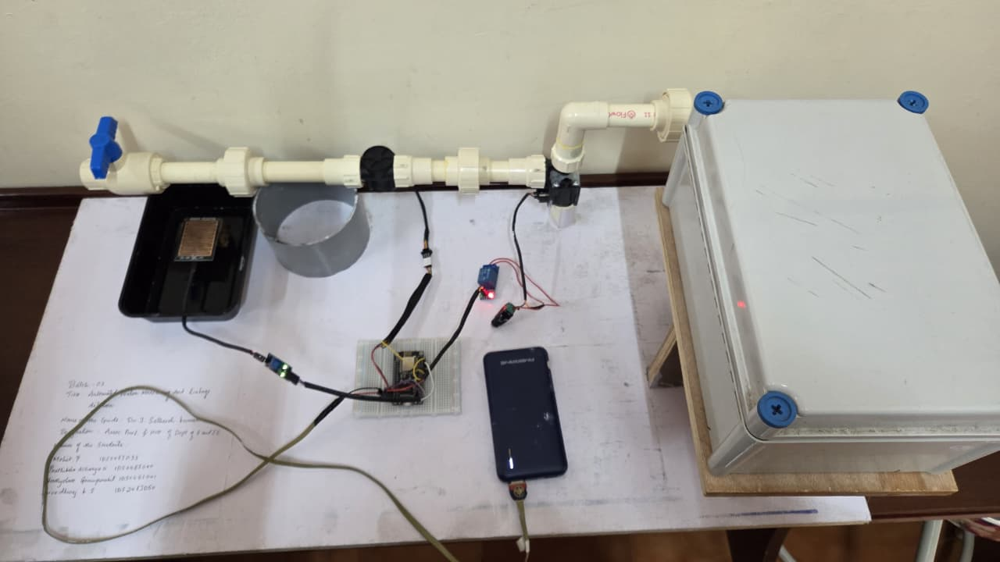
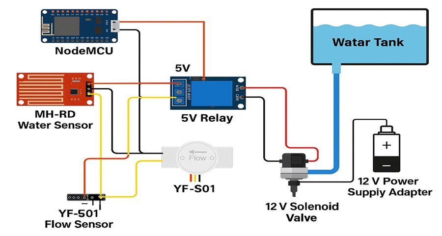
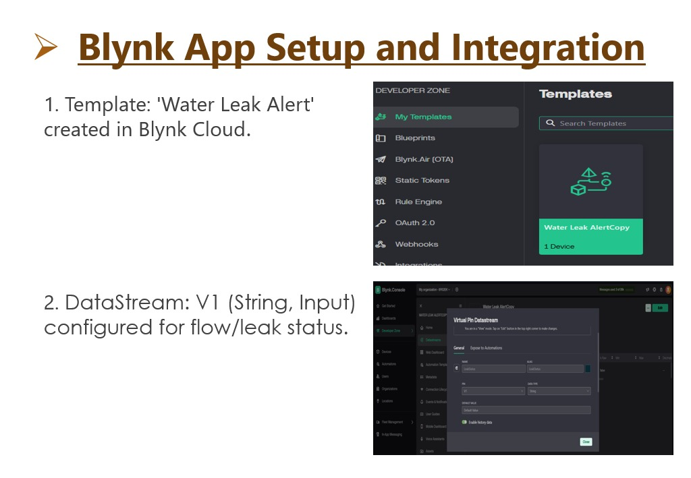
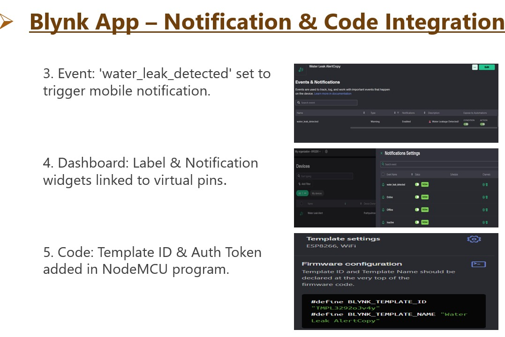

Water Leakage Detection & Control System
The Water Leakage Detection & Control System is an IoT-based smart monitoring solution developed using NodeMCU, water sensors, flow sensors, relay modules, and Blynk cloud integration. The system is designed to detect abnormal water leakage conditions in real time and automatically stop water flow to prevent unnecessary water wastage.

📘 Project Overview
This system continuously monitors water flow and detects abnormal leakage conditions using embedded sensors and automation logic. Once leakage is detected, the relay module automatically controls the solenoid valve to stop water flow and prevent unnecessary water wastage.

The circuit diagram represents the complete integration of NodeMCU, water sensors, relay modules, and solenoid valve connections. The system processes sensor data and performs automated control actions.
✨ Features
- Real-time water leakage monitoring
- Automatic water flow control
- Blynk mobile notifications
- IoT-based remote monitoring
- Smart and scalable water management solution

Blynk cloud integration was configured for real-time monitoring, mobile notifications, and event triggering. The dashboard allows users to monitor leakage status remotely.

Notification services and authentication tokens were integrated into the NodeMCU firmware to provide instant leakage alerts directly to the user’s smartphone.

The final output successfully demonstrated leakage detection, automated valve control, and real-time IoT notifications, making the system efficient and reliable for smart water management.
✅ Conclusion
This project successfully demonstrates an IoT-enabled smart water leakage monitoring and control system capable of reducing water wastage through automation and real-time monitoring technologies.